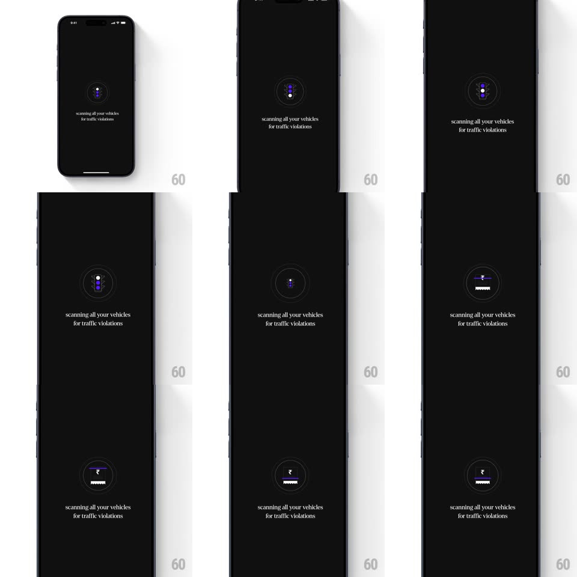

Media
Frame-by-frame

Rebuild this interaction 1:1: CRED's scanning loader - a black full-screen wait state where a thin circular frame slowly rotates while masked illustrations (a traffic light, a barcode, a rupee coin, a running figure) wipe through it in sequence, over "scanning all your vehicles for traffic violations".

Rebuild this interaction 1:1: CRED's scanning loader - a black full-screen wait state where a thin circular frame slowly rotates while masked illustrations (a traffic light, a barcode, a rupee coin, a running figure) wipe through it in sequence, over "scanning all your vehicles for traffic violations".
## Integration
Integration: stack-agnostic spec - springs given as stiffness/damping, timed motions as duration + curve; map every value to your framework and animation library of choice.
## Scene
Black screen: a small centered circular frame (~80px) with faint concentric rings, containing the current illustration; a two-line caption below in a serif face ("scanning all your vehicles for traffic violations").
## Motion spec
Pattern: sequential masked illustration carousel in a rotating frame.
- The circular frame rotates continuously (~12s/rev) with a subtle tick texture on its ring.
- Each illustration wipes in with a vertical mask reveal (500ms, ease-in-out), holds ~1.2s, then wipes out as the next wipes in: traffic light -> barcode scan -> ₹ coin -> running figure, looping.
- Illustrations are muted purple/gray line art on black - no color pops.
- The caption stays static the entire time.
## Calibration
- Everything is thin-line and dark - the loader reads as premium, not playful.
- Transitions between illustrations are mask wipes, never crossfades - the frame's contents are revealed, not blended.
## Reduced motion
Illustrations crossfade (300ms) with no ring rotation.
## Don't miss
- The frame's rotation is slow and constant, independent of the illustration cycle.
- The sequence loops until the scan completes - there is no progress bar.